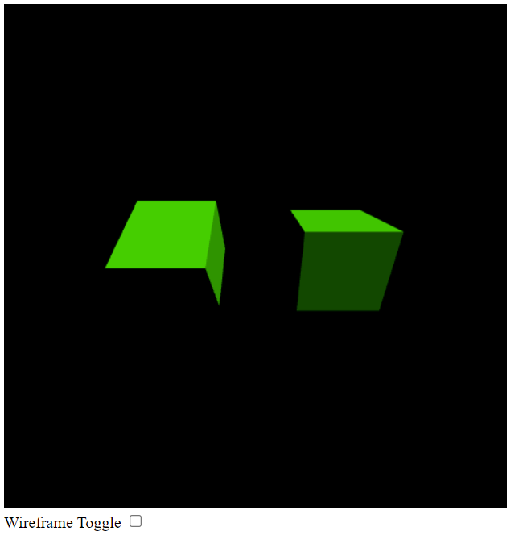

Name: Jack Bowen
Cruz ID: jmbowen@ucsc.edu (1839886)
Due Date: 2/4
Features:
- Creates 2 SORs in scene and renders them with a light source at [1, 1, 1].
- Click the toggle button "Wireframe Toggle" to toggle between Flat Shading and Wireframe.
- Some sides of the triangles appear to be unlit at initial position, not sure if this is from the light source being at [1, 1, 1.]
- Rotating the object shows that all sides are properly lit.
- Can rotate the objects by using the arrow keys.
Output Image
